...is a journalist, software developer, and graphic designer, specializing in data communication and information design. Here are some things he has done:
Visualized 18 million cable news chyrons to find out how the news differs based on which channel you watch.
Traveled through southern Louisiana to report on the effects of coastal degredation on local communities and the ongoing efforts to stop it.
Worked on a tool to explore the archive of the Peabody Award-winning podcat “On Being” based on threads of related conversation.
Made lots of charts and interactives and other things for FiveThirtyEight.
Designed and built live elections maps for The Lens to cover the 2016 presidential election in Louisiana.
Built and helped design a tool to compare 14 competitive industrial nations based on 23 indicators of national wellbeing.
Wrote and produced several podcasts, including one on the history of UConn and another on data.
 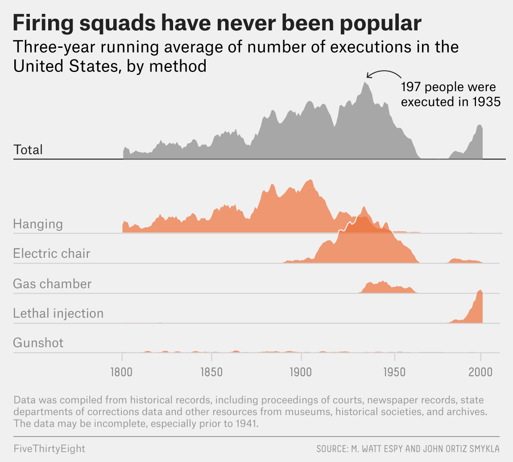
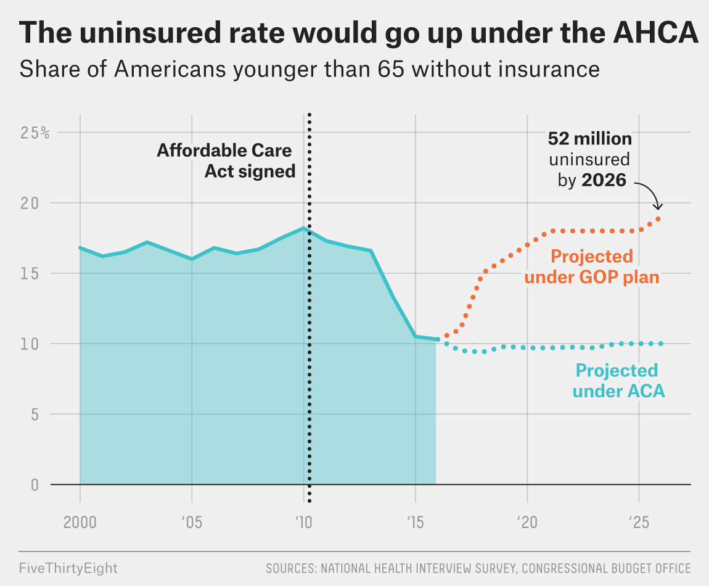
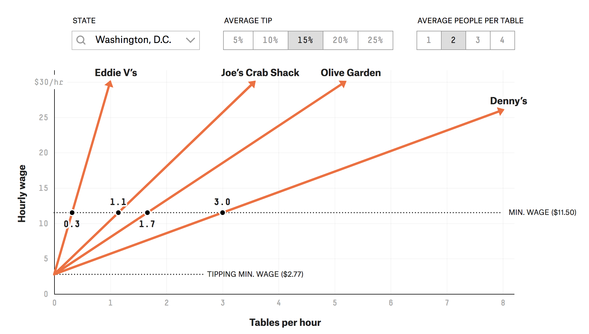
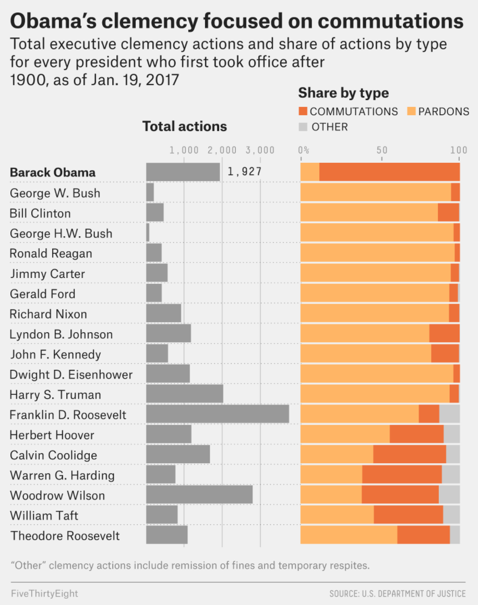
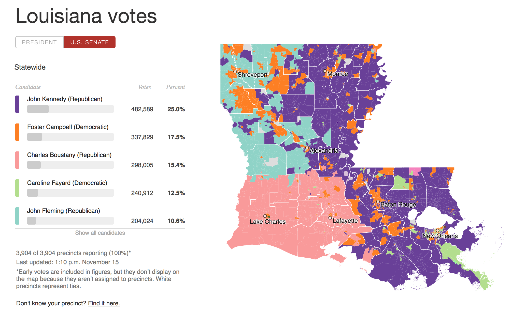
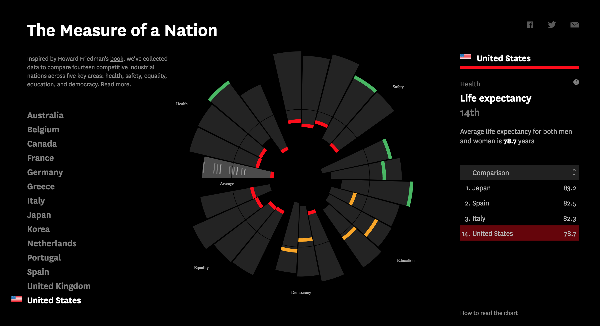
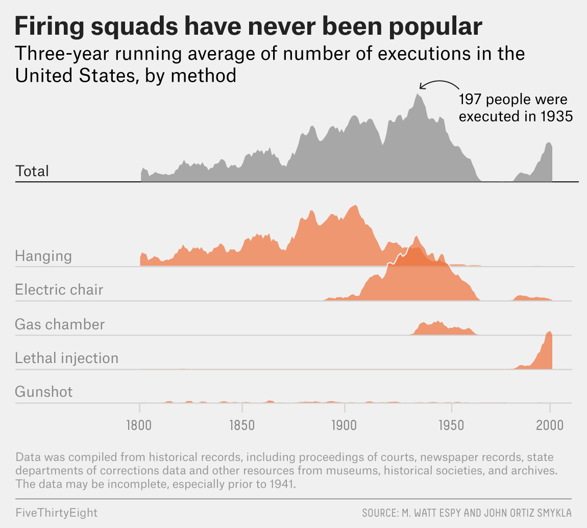
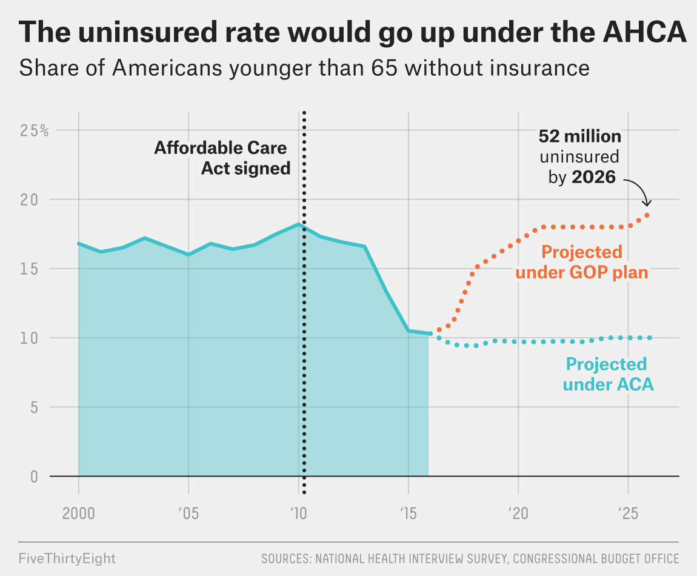
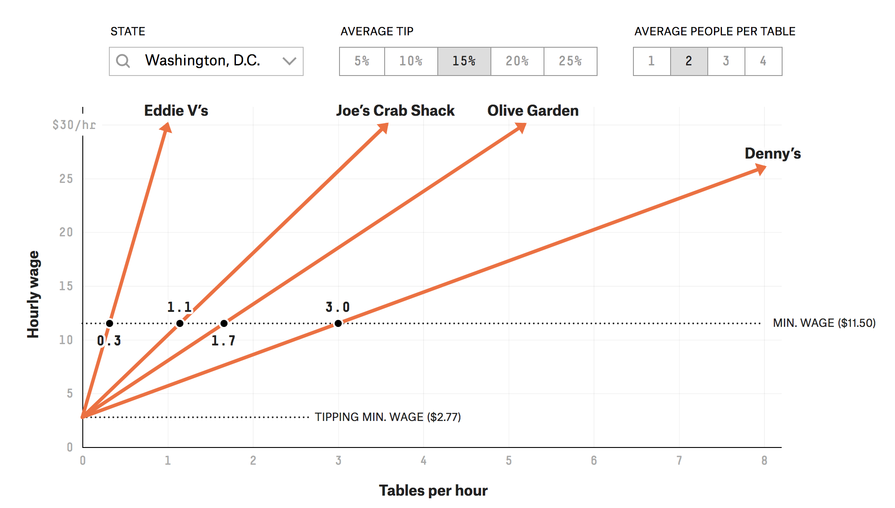
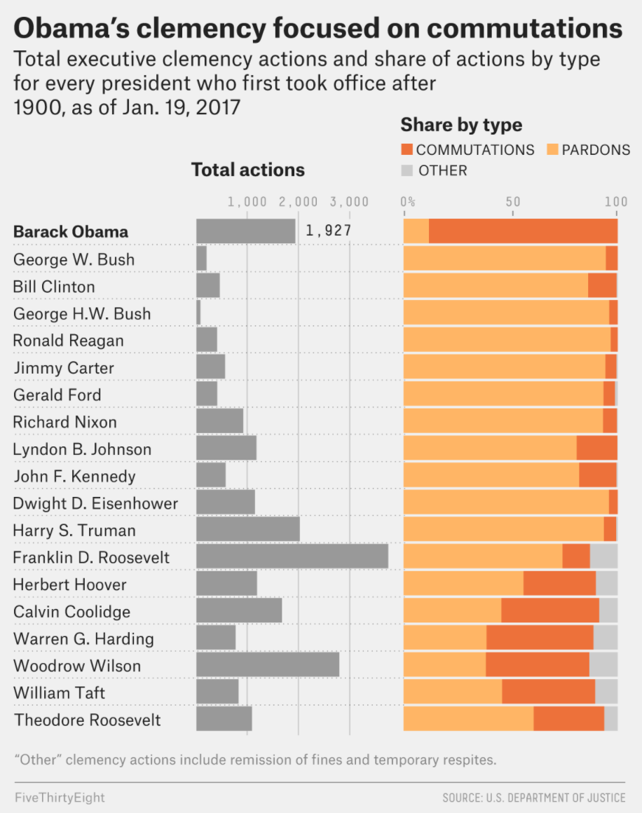
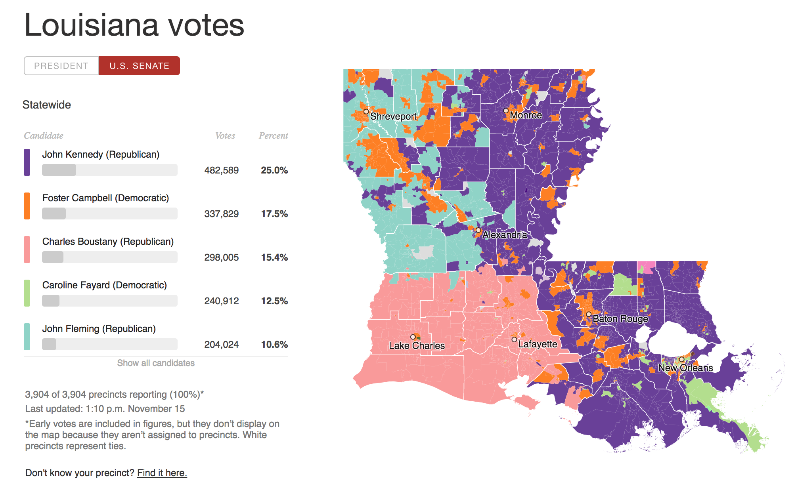
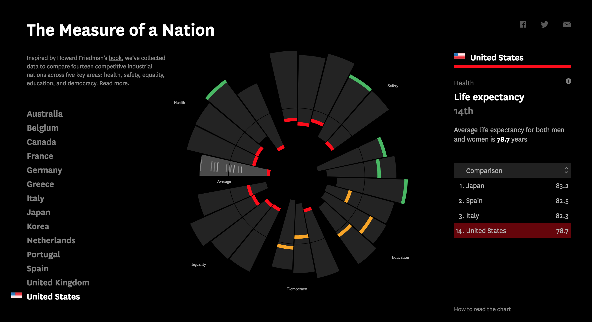